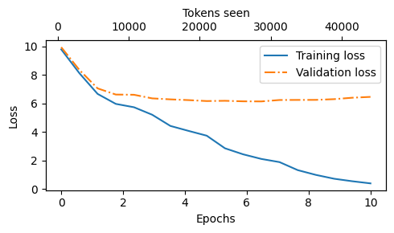

import torch
from previous_chapters import GPTModel
# If the `previous_chapters.py` file is not available locally,
# you can import it from the `llms-from-scratch` PyPI package.
# For details, see: https://github.com/rasbt/LLMs-from-scratch/tree/main/pkg
# E.g.,
# from llms_from_scratch.ch04 import GPTModel
GPT_CONFIG_124M = {
"vocab_size": 50257, # Vocabulary size
"context_length": 256, # Shortened context length (orig: 1024)
"emb_dim": 768, # Embedding dimension
"n_heads": 12, # Number of attention heads
"n_layers": 12, # Number of layers
"drop_rate": 0.1, # Dropout rate
"qkv_bias": False # Query-key-value bias
}
torch.manual_seed(123)
model = GPTModel(GPT_CONFIG_124M)
model.eval(); # Disable dropout during inference- In this chapter, we implement the training loop and code for basic model evaluation to pretrain an LLM
- At the end of this chapter, we also load openly available pretrained weights from OpenAI into our model

- The topics covered in this chapter are shown below

5.1 Evaluating generative text models
- We start this section with a brief recap of initializing a GPT model using the code from the previous chapter
- Then, we discuss basic evaluation metrics for LLMs
- Lastly, in this section, we apply these evaluation metrics to a training and validation dataset
5.1.1 Using GPT to generate text
- We initialize a GPT model using the code from the previous chapter
- We use dropout of 0.1 above, but it’s relatively common to train LLMs without dropout nowadays
- Modern LLMs also don’t use bias vectors in the
nn.Linearlayers for the query, key, and value matrices (unlike earlier GPT models), which is achieved by setting"qkv_bias": False - We reduce the context length (
context_length) of only 256 tokens to reduce the computational resource requirements for training the model, whereas the original 124 million parameter GPT-2 model used 1024 tokens- This is so that more readers will be able to follow and execute the code examples on their laptop computer
- However, please feel free to increase the
context_lengthto 1024 tokens (this would not require any code changes) - We will also load a model with a 1024
context_lengthlater from pretrained weights
- Next, we use the
generate_text_simplefunction from the previous chapter to generate text - In addition, we define two convenience functions,
text_to_token_idsandtoken_ids_to_text, for converting between token and text representations that we use throughout this chapter

import tiktoken
from previous_chapters import generate_text_simple
# Alternatively:
# from llms_from_scratch.ch04 import generate_text_simple
def text_to_token_ids(text, tokenizer):
encoded = tokenizer.encode(text, allowed_special={'<|endoftext|>'})
encoded_tensor = torch.tensor(encoded).unsqueeze(0) # add batch dimension
return encoded_tensor
def token_ids_to_text(token_ids, tokenizer):
flat = token_ids.squeeze(0) # remove batch dimension
return tokenizer.decode(flat.tolist())
start_context = "Every effort moves you"
tokenizer = tiktoken.get_encoding("gpt2")
token_ids = generate_text_simple(
model=model,
idx=text_to_token_ids(start_context, tokenizer),
max_new_tokens=10,
context_size=GPT_CONFIG_124M["context_length"]
)
print("Output text:\n", token_ids_to_text(token_ids, tokenizer))Output text:
Every effort moves you rentingetic wasnم refres RexMeCHicular stren- As we can see above, the model does not produce good text because it has not been trained yet
- How do we measure or capture what “good text” is, in a numeric form, to track it during training?
- The next subsection introduces metrics to calculate a loss metric for the generated outputs that we can use to measure the training progress
- The next chapters on finetuning LLMs will also introduce additional ways to measure model quality
5.1.2 Calculating the text generation loss: cross-entropy and perplexity
- Suppose we have an
inputstensor containing the token IDs for 2 training examples (rows) - Corresponding to the
inputs, thetargetscontain the desired token IDs that we want the model to generate - Notice that the
targetsare theinputsshifted by 1 position, as explained in chapter 2 when we implemented the data loader
inputs = torch.tensor([[16833, 3626, 6100], # ["every effort moves",
[40, 1107, 588]]) # "I really like"]
targets = torch.tensor([[3626, 6100, 345 ], # [" effort moves you",
[1107, 588, 11311]]) # " really like chocolate"]- Feeding the
inputsto the model, we obtain the logits vector for the 2 input examples that consist of 3 tokens each - Each of the tokens is a 50,257-dimensional vector corresponding to the size of the vocabulary
- Applying the softmax function, we can turn the logits tensor into a tensor of the same dimension containing probability scores
with torch.no_grad():
logits = model(inputs)
probas = torch.softmax(logits, dim=-1) # Probability of each token in vocabulary
print(probas.shape) # Shape: (batch_size, num_tokens, vocab_size)torch.Size([2, 3, 50257])- The figure below, using a very small vocabulary for illustration purposes, outlines how we convert the probability scores back into text, which we discussed at the end of the previous chapter

As discussed in the previous chapter, we can apply the
argmaxfunction to convert the probability scores into predicted token IDsThe softmax function above produced a 50,257-dimensional vector for each token; the
argmaxfunction returns the position of the highest probability score in this vector, which is the predicted token ID for the given tokenSince we have 2 input batches with 3 tokens each, we obtain 2 by 3 predicted token IDs:
token_ids = torch.argmax(probas, dim=-1, keepdim=True)
print("Token IDs:\n", token_ids)Token IDs:
tensor([[[16657],
[ 339],
[42826]],
[[49906],
[29669],
[41751]]])- If we decode these tokens, we find that these are quite different from the tokens we want the model to predict, namely the target tokens:
print(f"Targets batch 1: {token_ids_to_text(targets[0], tokenizer)}")
print(f"Outputs batch 1: {token_ids_to_text(token_ids[0].flatten(), tokenizer)}")Targets batch 1: effort moves you
Outputs batch 1: Armed heNetflix- That’s because the model wasn’t trained yet
- To train the model, we need to know how far it is away from the correct predictions (targets)

- The token probabilities corresponding to the target indices are as follows:
text_idx = 0
target_probas_1 = probas[text_idx, [0, 1, 2], targets[text_idx]]
print("Text 1:", target_probas_1)
text_idx = 1
target_probas_2 = probas[text_idx, [0, 1, 2], targets[text_idx]]
print("Text 2:", target_probas_2)Text 1: tensor([7.4541e-05, 3.1061e-05, 1.1563e-05])
Text 2: tensor([1.0337e-05, 5.6776e-05, 4.7559e-06])- We want to maximize all these values, bringing them close to a probability of 1
- In mathematical optimization, it is easier to maximize the logarithm of the probability score than the probability score itself; this is out of the scope of this book, but I have recorded a lecture with more details here: L8.2 Logistic Regression Loss Function
# Compute logarithm of all token probabilities
log_probas = torch.log(torch.cat((target_probas_1, target_probas_2)))
print(log_probas)tensor([ -9.5042, -10.3796, -11.3677, -11.4798, -9.7764, -12.2561])- Next, we compute the average log probability:
# Calculate the average probability for each token
avg_log_probas = torch.mean(log_probas)
print(avg_log_probas)tensor(-10.7940)The goal is to make this average log probability as large as possible by optimizing the model weights
Due to the log, the largest possible value is 0, and we are currently far away from 0
In deep learning, instead of maximizing the average log-probability, it’s a standard convention to minimize the negative average log-probability value; in our case, instead of maximizing -10.7722 so that it approaches 0, in deep learning, we would minimize 10.7722 so that it approaches 0
The value negative of -10.7722, i.e., 10.7722, is also called cross-entropy loss in deep learning
neg_avg_log_probas = avg_log_probas * -1
print(neg_avg_log_probas)tensor(10.7940)- PyTorch already implements a
cross_entropyfunction that carries out the previous steps

- Before we apply the
cross_entropyfunction, let’s check the shape of the logits and targets
# Logits have shape (batch_size, num_tokens, vocab_size)
print("Logits shape:", logits.shape)
# Targets have shape (batch_size, num_tokens)
print("Targets shape:", targets.shape)Logits shape: torch.Size([2, 3, 50257])
Targets shape: torch.Size([2, 3])- For the
cross_entropyfunction in PyTorch, we want to flatten these tensors by combining them over the batch dimension:
logits_flat = logits.flatten(0, 1)
targets_flat = targets.flatten()
print("Flattened logits:", logits_flat.shape)
print("Flattened targets:", targets_flat.shape)Flattened logits: torch.Size([6, 50257])
Flattened targets: torch.Size([6])- Note that the targets are the token IDs, which also represent the index positions in the logits tensors that we want to maximize
- The
cross_entropyfunction in PyTorch will automatically take care of applying the softmax and log-probability computation internally over those token indices in the logits that are to be maximized
loss = torch.nn.functional.cross_entropy(logits_flat, targets_flat)
print(loss)tensor(10.7940)- A concept related to the cross-entropy loss is the perplexity of an LLM
- The perplexity is simply the exponential of the cross-entropy loss
perplexity = torch.exp(loss)
print(perplexity)tensor(48725.8203)- The perplexity is often considered more interpretable because it can be understood as the effective vocabulary size that the model is uncertain about at each step (in the example above, that’d be 48,725 words or tokens)
- In other words, perplexity provides a measure of how well the probability distribution predicted by the model matches the actual distribution of the words in the dataset
- Similar to the loss, a lower perplexity indicates that the model predictions are closer to the actual distribution
5.1.3 Calculating the training and validation set losses
- We use a relatively small dataset for training the LLM (in fact, only one short story)
- The reasons are:
- You can run the code examples in a few minutes on a laptop computer without a suitable GPU
- The training finishes relatively fast (minutes instead of weeks), which is good for educational purposes
- We use a text from the public domain, which can be included in this GitHub repository without violating any usage rights or bloating the repository size
- For example, Llama 2 7B required 184,320 GPU hours on A100 GPUs to be trained on 2 trillion tokens
- At the time of this writing, the hourly cost of an 8xA100 cloud server at AWS is approximately \$30
- So, via an off-the-envelope calculation, training this LLM would cost 184,320 / 8 * \$30 = \$690,000
- Below, we use the same dataset we used in chapter 2
import os
import urllib.request
file_path = "the-verdict.txt"
url = "https://raw.githubusercontent.com/rasbt/LLMs-from-scratch/main/ch02/01_main-chapter-code/the-verdict.txt"
if not os.path.exists(file_path):
with urllib.request.urlopen(url) as response:
text_data = response.read().decode('utf-8')
with open(file_path, "w", encoding="utf-8") as file:
file.write(text_data)
else:
with open(file_path, "r", encoding="utf-8") as file:
text_data = file.read()- A quick check that the text loaded ok by printing the first and last 99 characters
# First 99 characters
print(text_data[:99])I HAD always thought Jack Gisburn rather a cheap genius--though a good fellow enough--so it was no # Last 99 characters
print(text_data[-99:])it for me! The Strouds stand alone, and happen once--but there's no exterminating our kind of art."total_characters = len(text_data)
total_tokens = len(tokenizer.encode(text_data))
print("Characters:", total_characters)
print("Tokens:", total_tokens)Characters: 20479
Tokens: 5145With 5,145 tokens, the text is very short for training an LLM, but again, it’s for educational purposes (we will also load pretrained weights later)
Next, we divide the dataset into a training and a validation set and use the data loaders from chapter 2 to prepare the batches for LLM training
For visualization purposes, the figure below assumes a
max_length=6, but for the training loader, we set themax_lengthequal to the context length that the LLM supportsThe figure below only shows the input tokens for simplicity
- Since we train the LLM to predict the next word in the text, the targets look the same as these inputs, except that the targets are shifted by one position

from previous_chapters import create_dataloader_v1
# Alternatively:
# from llms_from_scratch.ch02 import create_dataloader_v1
# Train/validation ratio
train_ratio = 0.90
split_idx = int(train_ratio * len(text_data))
train_data = text_data[:split_idx]
val_data = text_data[split_idx:]
torch.manual_seed(123)
train_loader = create_dataloader_v1(
train_data,
batch_size=2,
max_length=GPT_CONFIG_124M["context_length"],
stride=GPT_CONFIG_124M["context_length"],
drop_last=True,
shuffle=True,
num_workers=0
)
val_loader = create_dataloader_v1(
val_data,
batch_size=2,
max_length=GPT_CONFIG_124M["context_length"],
stride=GPT_CONFIG_124M["context_length"],
drop_last=False,
shuffle=False,
num_workers=0
)# Sanity check
if total_tokens * (train_ratio) < GPT_CONFIG_124M["context_length"]:
print("Not enough tokens for the training loader. "
"Try to lower the `GPT_CONFIG_124M['context_length']` or "
"increase the `training_ratio`")
if total_tokens * (1-train_ratio) < GPT_CONFIG_124M["context_length"]:
print("Not enough tokens for the validation loader. "
"Try to lower the `GPT_CONFIG_124M['context_length']` or "
"decrease the `training_ratio`")We use a relatively small batch size to reduce the computational resource demand, and because the dataset is very small to begin with
Llama 2 7B was trained with a batch size of 1024, for example
An optional check that the data was loaded correctly:
print("Train loader:")
for x, y in train_loader:
print(x.shape, y.shape)
print("\nValidation loader:")
for x, y in val_loader:
print(x.shape, y.shape)Train loader:
torch.Size([2, 256]) torch.Size([2, 256])
torch.Size([2, 256]) torch.Size([2, 256])
torch.Size([2, 256]) torch.Size([2, 256])
torch.Size([2, 256]) torch.Size([2, 256])
torch.Size([2, 256]) torch.Size([2, 256])
torch.Size([2, 256]) torch.Size([2, 256])
torch.Size([2, 256]) torch.Size([2, 256])
torch.Size([2, 256]) torch.Size([2, 256])
torch.Size([2, 256]) torch.Size([2, 256])
Validation loader:
torch.Size([2, 256]) torch.Size([2, 256])- Another optional check that the token sizes are in the expected ballpark:
train_tokens = 0
for input_batch, target_batch in train_loader:
train_tokens += input_batch.numel()
val_tokens = 0
for input_batch, target_batch in val_loader:
val_tokens += input_batch.numel()
print("Training tokens:", train_tokens)
print("Validation tokens:", val_tokens)
print("All tokens:", train_tokens + val_tokens)Training tokens: 4608
Validation tokens: 512
All tokens: 5120- Next, we implement a utility function to calculate the cross-entropy loss of a given batch
- In addition, we implement a second utility function to compute the loss for a user-specified number of batches in a data loader
def calc_loss_batch(input_batch, target_batch, model, device):
input_batch, target_batch = input_batch.to(device), target_batch.to(device)
logits = model(input_batch)
loss = torch.nn.functional.cross_entropy(logits.flatten(0, 1), target_batch.flatten())
return loss
def calc_loss_loader(data_loader, model, device, num_batches=None):
total_loss = 0.
if len(data_loader) == 0:
return float("nan")
elif num_batches is None:
num_batches = len(data_loader)
else:
# Reduce the number of batches to match the total number of batches in the data loader
# if num_batches exceeds the number of batches in the data loader
num_batches = min(num_batches, len(data_loader))
for i, (input_batch, target_batch) in enumerate(data_loader):
if i < num_batches:
loss = calc_loss_batch(input_batch, target_batch, model, device)
total_loss += loss.item()
else:
break
return total_loss / num_batches- If you have a machine with a CUDA-supported GPU, the LLM will train on the GPU without making any changes to the code
- Via the
devicesetting, we ensure that the data is loaded onto the same device as the LLM model
device = torch.device("cuda" if torch.cuda.is_available() else "cpu")
# Note:
# Uncommenting the following lines will allow the code to run on Apple Silicon chips, if applicable,
# which is approximately 2x faster than on an Apple CPU (as measured on an M3 MacBook Air).
# However, the resulting loss values may be slightly different.
#if torch.cuda.is_available():
# device = torch.device("cuda")
#elif torch.backends.mps.is_available():
# device = torch.device("mps")
#else:
# device = torch.device("cpu")
#
# print(f"Using {device} device.")
model.to(device) # no assignment model = model.to(device) necessary for nn.Module classes
torch.manual_seed(123) # For reproducibility due to the shuffling in the data loader
with torch.no_grad(): # Disable gradient tracking for efficiency because we are not training, yet
train_loss = calc_loss_loader(train_loader, model, device)
val_loss = calc_loss_loader(val_loader, model, device)
print("Training loss:", train_loss)
print("Validation loss:", val_loss)Training loss: 10.98758347829183
Validation loss: 10.98110580444336
5.2 Training an LLM
- In this section, we finally implement the code for training the LLM
- We focus on a simple training function (if you are interested in augmenting this training function with more advanced techniques, such as learning rate warmup, cosine annealing, and gradient clipping, please refer to Appendix D)

def train_model_simple(model, train_loader, val_loader, optimizer, device, num_epochs,
eval_freq, eval_iter, start_context, tokenizer):
# Initialize lists to track losses and tokens seen
train_losses, val_losses, track_tokens_seen = [], [], []
tokens_seen, global_step = 0, -1
# Main training loop
for epoch in range(num_epochs):
model.train() # Set model to training mode
for input_batch, target_batch in train_loader:
optimizer.zero_grad() # Reset loss gradients from previous batch iteration
loss = calc_loss_batch(input_batch, target_batch, model, device)
loss.backward() # Calculate loss gradients
optimizer.step() # Update model weights using loss gradients
tokens_seen += input_batch.numel()
global_step += 1
# Optional evaluation step
if global_step % eval_freq == 0:
train_loss, val_loss = evaluate_model(
model, train_loader, val_loader, device, eval_iter)
train_losses.append(train_loss)
val_losses.append(val_loss)
track_tokens_seen.append(tokens_seen)
print(f"Ep {epoch+1} (Step {global_step:06d}): "
f"Train loss {train_loss:.3f}, Val loss {val_loss:.3f}")
# Print a sample text after each epoch
generate_and_print_sample(
model, tokenizer, device, start_context
)
return train_losses, val_losses, track_tokens_seen
def evaluate_model(model, train_loader, val_loader, device, eval_iter):
model.eval()
with torch.no_grad():
train_loss = calc_loss_loader(train_loader, model, device, num_batches=eval_iter)
val_loss = calc_loss_loader(val_loader, model, device, num_batches=eval_iter)
model.train()
return train_loss, val_loss
def generate_and_print_sample(model, tokenizer, device, start_context):
model.eval()
context_size = model.pos_emb.weight.shape[0]
encoded = text_to_token_ids(start_context, tokenizer).to(device)
with torch.no_grad():
token_ids = generate_text_simple(
model=model, idx=encoded,
max_new_tokens=50, context_size=context_size
)
decoded_text = token_ids_to_text(token_ids, tokenizer)
print(decoded_text.replace("\n", " ")) # Compact print format
model.train()- Now, let’s train the LLM using the training function defined above:
# Note:
# Uncomment the following code to calculate the execution time
# import time
# start_time = time.time()
torch.manual_seed(123)
model = GPTModel(GPT_CONFIG_124M)
model.to(device)
optimizer = torch.optim.AdamW(model.parameters(), lr=0.0004, weight_decay=0.1)
num_epochs = 10
train_losses, val_losses, tokens_seen = train_model_simple(
model, train_loader, val_loader, optimizer, device,
num_epochs=num_epochs, eval_freq=5, eval_iter=5,
start_context="Every effort moves you", tokenizer=tokenizer
)
# Note:
# Uncomment the following code to show the execution time
# end_time = time.time()
# execution_time_minutes = (end_time - start_time) / 60
# print(f"Training completed in {execution_time_minutes:.2f} minutes.")Ep 1 (Step 000000): Train loss 9.781, Val loss 9.933
Ep 1 (Step 000005): Train loss 8.111, Val loss 8.339
Every effort moves you,,,,,,,,,,,,.
Ep 2 (Step 000010): Train loss 6.661, Val loss 7.048
Ep 2 (Step 000015): Train loss 5.961, Val loss 6.616
Every effort moves you, and, and, and, and, and, and, and, and, and, and, and, and, and, and, and, and, and, and, and, and, and, and,, and, and,
Ep 3 (Step 000020): Train loss 5.726, Val loss 6.600
Ep 3 (Step 000025): Train loss 5.201, Val loss 6.348
Every effort moves you, and I had been.
Ep 4 (Step 000030): Train loss 4.417, Val loss 6.278
Ep 4 (Step 000035): Train loss 4.069, Val loss 6.226
Every effort moves you know the "I he had the donkey and I had the and I had the donkey and down the room, I had
Ep 5 (Step 000040): Train loss 3.732, Val loss 6.160
Every effort moves you know it was not that the picture--I had the fact by the last I had been--his, and in the "Oh, and he said, and down the room, and in
Ep 6 (Step 000045): Train loss 2.850, Val loss 6.179
Ep 6 (Step 000050): Train loss 2.427, Val loss 6.141
Every effort moves you know," was one of the picture. The--I had a little of a little: "Yes, and in fact, and in the picture was, and I had been at my elbow and as his pictures, and down the room, I had
Ep 7 (Step 000055): Train loss 2.104, Val loss 6.134
Ep 7 (Step 000060): Train loss 1.882, Val loss 6.233
Every effort moves you know," was one of the picture for nothing--I told Mrs. "I was no--as! The women had been, in the moment--as Jack himself, as once one had been the donkey, and were, and in his
Ep 8 (Step 000065): Train loss 1.320, Val loss 6.238
Ep 8 (Step 000070): Train loss 0.985, Val loss 6.242
Every effort moves you know," was one of the axioms he had been the tips of a self-confident moustache, I felt to see a smile behind his close grayish beard--as if he had the donkey. "strongest," as his
Ep 9 (Step 000075): Train loss 0.717, Val loss 6.293
Ep 9 (Step 000080): Train loss 0.541, Val loss 6.393
Every effort moves you?" "Yes--quite insensible to the irony. She wanted him vindicated--and by me!" He laughed again, and threw back the window-curtains, I had the donkey. "There were days when I
Ep 10 (Step 000085): Train loss 0.391, Val loss 6.452
Every effort moves you know," was one of the axioms he laid down across the Sevres and silver of an exquisitely appointed luncheon-table, when, on a later day, I had again run over from Monte Carlo; and Mrs. Gis- Note that you might get slightly different loss values on your computer, which is not a reason for concern if they are roughly similar (a training loss below 1 and a validation loss below 7)
- Small differences can often be due to different GPU hardware and CUDA versions or small changes in newer PyTorch versions
- Even if you are running the example on a CPU, you may observe slight differences; a possible reason for a discrepancy is the differing behavior of
nn.Dropoutacross operating systems, depending on how PyTorch was compiled, as discussed here on the PyTorch issue tracker
import matplotlib.pyplot as plt
from matplotlib.ticker import MaxNLocator
def plot_losses(epochs_seen, tokens_seen, train_losses, val_losses):
fig, ax1 = plt.subplots(figsize=(5, 3))
# Plot training and validation loss against epochs
ax1.plot(epochs_seen, train_losses, label="Training loss")
ax1.plot(epochs_seen, val_losses, linestyle="-.", label="Validation loss")
ax1.set_xlabel("Epochs")
ax1.set_ylabel("Loss")
ax1.legend(loc="upper right")
ax1.xaxis.set_major_locator(MaxNLocator(integer=True)) # only show integer labels on x-axis
# Create a second x-axis for tokens seen
ax2 = ax1.twiny() # Create a second x-axis that shares the same y-axis
ax2.plot(tokens_seen, train_losses, alpha=0) # Invisible plot for aligning ticks
ax2.set_xlabel("Tokens seen")
fig.tight_layout() # Adjust layout to make room
plt.savefig("loss-plot.pdf")
plt.show()
epochs_tensor = torch.linspace(0, num_epochs, len(train_losses))
plot_losses(epochs_tensor, tokens_seen, train_losses, val_losses)
- Looking at the results above, we can see that the model starts out generating incomprehensible strings of words, whereas towards the end, it’s able to produce grammatically more or less correct sentences
- However, based on the training and validation set losses, we can see that the model starts overfitting
- If we were to check a few passages it writes towards the end, we would find that they are contained in the training set verbatim – it simply memorizes the training data
- Later, we will cover decoding strategies that can mitigate this memorization by a certain degree
- Note that the overfitting here occurs because we have a very, very small training set, and we iterate over it so many times
- The LLM training here primarily serves educational purposes; we mainly want to see that the model can learn to produce coherent text
- Instead of spending weeks or months on training this model on vast amounts of expensive hardware, we load pretrained weights later

If you are interested in augmenting this training function with more advanced techniques, such as learning rate warmup, cosine annealing, and gradient clipping, please refer to Appendix D
If you are interested in a larger training dataset and longer training run, see ../03_bonus_pretraining_on_gutenberg
5.3 Decoding strategies to control randomness
- Inference is relatively cheap with a relatively small LLM as the GPT model we trained above, so there’s no need to use a GPU for it in case you used a GPU for training it above
- Using the
generate_text_simplefunction (from the previous chapter) that we used earlier inside the simple training function, we can generate new text one word (or token) at a time - As explained in section 5.1.2, the next generated token is the token corresponding to the largest probability score among all tokens in the vocabulary
model.to("cpu")
model.eval()
tokenizer = tiktoken.get_encoding("gpt2")
token_ids = generate_text_simple(
model=model,
idx=text_to_token_ids("Every effort moves you", tokenizer),
max_new_tokens=25,
context_size=GPT_CONFIG_124M["context_length"]
)
print("Output text:\n", token_ids_to_text(token_ids, tokenizer))Output text:
Every effort moves you know," was one of the axioms he laid down across the Sevres and silver of an exquisitely appointed lun- Even if we execute the
generate_text_simplefunction above multiple times, the LLM will always generate the same outputs - We now introduce two concepts, so-called decoding strategies, to modify the
generate_text_simple: temperature scaling and top-k sampling - These will allow the model to control the randomness and diversity of the generated text
5.3.1 Temperature scaling
Previously, we always sampled the token with the highest probability as the next token using
torch.argmaxTo add variety, we can sample the next token using The
torch.multinomial(probs, num_samples=1), sampling from a probability distributionHere, each index’s chance of being picked corresponds to its probability in the input tensor
Here’s a little recap of generating the next token, assuming a very small vocabulary for illustration purposes:
vocab = {
"closer": 0,
"every": 1,
"effort": 2,
"forward": 3,
"inches": 4,
"moves": 5,
"pizza": 6,
"toward": 7,
"you": 8,
}
inverse_vocab = {v: k for k, v in vocab.items()}
# Suppose input is "every effort moves you", and the LLM
# returns the following logits for the next token:
next_token_logits = torch.tensor(
[4.51, 0.89, -1.90, 6.75, 1.63, -1.62, -1.89, 6.28, 1.79]
)
probas = torch.softmax(next_token_logits, dim=0)
next_token_id = torch.argmax(probas).item()
# The next generated token is then as follows:
print(inverse_vocab[next_token_id])forwardtorch.manual_seed(123)
next_token_id = torch.multinomial(probas, num_samples=1).item()
print(inverse_vocab[next_token_id])forward- Instead of determining the most likely token via
torch.argmax, we usetorch.multinomial(probas, num_samples=1)to determine the most likely token by sampling from the softmax distribution - For illustration purposes, let’s see what happens when we sample the next token 1,000 times using the original softmax probabilities:
def print_sampled_tokens(probas):
torch.manual_seed(123) # Manual seed for reproducibility
sample = [torch.multinomial(probas, num_samples=1).item() for i in range(1_000)]
sampled_ids = torch.bincount(torch.tensor(sample), minlength=len(probas))
for i, freq in enumerate(sampled_ids):
print(f"{freq} x {inverse_vocab[i]}")
print_sampled_tokens(probas)73 x closer
0 x every
0 x effort
582 x forward
2 x inches
0 x moves
0 x pizza
343 x toward
0 x youWe can control the distribution and selection process via a concept called temperature scaling
“Temperature scaling” is just a fancy word for dividing the logits by a number greater than 0
Temperatures greater than 1 will result in more uniformly distributed token probabilities after applying the softmax
Temperatures smaller than 1 will result in more confident (sharper or more peaky) distributions after applying the softmax
Note that the resulting dropout outputs may look different depending on your operating system; you can read more about this inconsistency here on the PyTorch issue tracker
def softmax_with_temperature(logits, temperature):
scaled_logits = logits / temperature
return torch.softmax(scaled_logits, dim=0)
# Temperature values
temperatures = [1, 0.1, 5] # Original, higher confidence, and lower confidence
# Calculate scaled probabilities
scaled_probas = [softmax_with_temperature(next_token_logits, T) for T in temperatures]# Plotting
x = torch.arange(len(vocab))
bar_width = 0.15
fig, ax = plt.subplots(figsize=(5, 3))
for i, T in enumerate(temperatures):
rects = ax.bar(x + i * bar_width, scaled_probas[i], bar_width, label=f'Temperature = {T}')
ax.set_ylabel('Probability')
ax.set_xticks(x)
ax.set_xticklabels(vocab.keys(), rotation=90)
ax.legend()
plt.tight_layout()
plt.savefig("temperature-plot.pdf")
plt.show()
- We can see that the rescaling via temperature 0.1 results in a sharper distribution, approaching
torch.argmax, such that the most likely word is almost always selected:
print_sampled_tokens(scaled_probas[1])0 x closer
0 x every
0 x effort
985 x forward
0 x inches
0 x moves
0 x pizza
15 x toward
0 x you- The rescaled probabilities via temperature 5 are more uniformly distributed:
print_sampled_tokens(scaled_probas[2])165 x closer
75 x every
42 x effort
239 x forward
71 x inches
46 x moves
32 x pizza
227 x toward
103 x you- Assuming an LLM input “every effort moves you”, using the approach above can sometimes result in nonsensical texts, such as “every effort moves you pizza”, 3.2% of the time (32 out of 1000 times)
5.3.2 Top-k sampling
- To be able to use higher temperatures to increase output diversity and to reduce the probability of nonsensical sentences, we can restrict the sampled tokens to the top-k most likely tokens:

(Please note that the numbers in this figure are truncated to two digits after the decimal point to reduce visual clutter. The values in the Softmax row should add up to 1.0.)
In code, we can implement this as follows:
top_k = 3
top_logits, top_pos = torch.topk(next_token_logits, top_k)
print("Top logits:", top_logits)
print("Top positions:", top_pos)Top logits: tensor([6.7500, 6.2800, 4.5100])
Top positions: tensor([3, 7, 0])new_logits = torch.where(
condition=next_token_logits < top_logits[-1],
input=torch.tensor(float("-inf")),
other=next_token_logits
)
print(new_logits)tensor([4.5100, -inf, -inf, 6.7500, -inf, -inf, -inf, 6.2800, -inf])NOTE:
An alternative, slightly more efficient implementation of the previous code cell is the following:
new_logits = torch.full_like( # create tensor containing -inf values next_token_logits, -torch.inf ) new_logits[top_pos] = next_token_logits[top_pos] # copy top k values into the -inf tensor
For more details, see https://github.com/rasbt/LLMs-from-scratch/discussions/326
topk_probas = torch.softmax(new_logits, dim=0)
print(topk_probas)tensor([0.0615, 0.0000, 0.0000, 0.5775, 0.0000, 0.0000, 0.0000, 0.3610, 0.0000])5.3.3 Modifying the text generation function
- The previous two subsections introduced temperature sampling and top-k sampling
- Let’s use these two concepts to modify the
generate_simplefunction we used to generate text via the LLM earlier, creating a newgeneratefunction:
def generate(model, idx, max_new_tokens, context_size, temperature=0.0, top_k=None, eos_id=None):
# For-loop is the same as before: Get logits, and only focus on last time step
for _ in range(max_new_tokens):
idx_cond = idx[:, -context_size:]
with torch.no_grad():
logits = model(idx_cond)
logits = logits[:, -1, :]
# New: Filter logits with top_k sampling
if top_k is not None:
# Keep only top_k values
top_logits, _ = torch.topk(logits, top_k)
min_val = top_logits[:, -1]
logits = torch.where(logits < min_val, torch.tensor(float("-inf")).to(logits.device), logits)
# New: Apply temperature scaling
if temperature > 0.0:
logits = logits / temperature
# Apply softmax to get probabilities
probs = torch.softmax(logits, dim=-1) # (batch_size, context_len)
# Sample from the distribution
idx_next = torch.multinomial(probs, num_samples=1) # (batch_size, 1)
# Otherwise same as before: get idx of the vocab entry with the highest logits value
else:
idx_next = torch.argmax(logits, dim=-1, keepdim=True) # (batch_size, 1)
if idx_next == eos_id: # Stop generating early if end-of-sequence token is encountered and eos_id is specified
break
# Same as before: append sampled index to the running sequence
idx = torch.cat((idx, idx_next), dim=1) # (batch_size, num_tokens+1)
return idxtorch.manual_seed(123)
token_ids = generate(
model=model,
idx=text_to_token_ids("Every effort moves you", tokenizer),
max_new_tokens=15,
context_size=GPT_CONFIG_124M["context_length"],
top_k=25,
temperature=1.4
)
print("Output text:\n", token_ids_to_text(token_ids, tokenizer))Output text:
Every effort moves you stand to work on surprise, a one of us had gone with random-5.4 Loading and saving model weights in PyTorch
- Training LLMs is computationally expensive, so it’s crucial to be able to save and load LLM weights

- The recommended way in PyTorch is to save the model weights, the so-called
state_dictvia by applying thetorch.savefunction to the.state_dict()method:
torch.save(model.state_dict(), "model.pth")- Then we can load the model weights into a new
GPTModelmodel instance as follows:
model = GPTModel(GPT_CONFIG_124M)
device = torch.device("cuda" if torch.cuda.is_available() else "cpu")
model.load_state_dict(torch.load("model.pth", map_location=device, weights_only=True))
model.eval();- It’s common to train LLMs with adaptive optimizers like Adam or AdamW instead of regular SGD
- These adaptive optimizers store additional parameters for each model weight, so it makes sense to save them as well in case we plan to continue the pretraining later:
torch.save({
"model_state_dict": model.state_dict(),
"optimizer_state_dict": optimizer.state_dict(),
},
"model_and_optimizer.pth"
)checkpoint = torch.load("model_and_optimizer.pth", weights_only=True)
model = GPTModel(GPT_CONFIG_124M)
model.load_state_dict(checkpoint["model_state_dict"])
optimizer = torch.optim.AdamW(model.parameters(), lr=0.0005, weight_decay=0.1)
optimizer.load_state_dict(checkpoint["optimizer_state_dict"])
model.train();5.5 Loading pretrained weights from OpenAI
- Previously, we only trained a small GPT-2 model using a very small short-story book for educational purposes
- Interested readers can also find a longer pretraining run on the complete Project Gutenberg book corpus in ../03_bonus_pretraining_on_gutenberg
- Fortunately, we don’t have to spend tens to hundreds of thousands of dollars to pretrain the model on a large pretraining corpus but can load the pretrained weights provided by OpenAI
⚠️ Note: Some users may encounter issues in this section due to TensorFlow compatibility problems, particularly on certain Windows systems. TensorFlow is required here only to load the original OpenAI GPT-2 weight files, which we then convert to PyTorch. If you’re running into TensorFlow-related issues, you can use the alternative code below instead of the remaining code in this section. This alternative is based on pre-converted PyTorch weights, created using the same conversion process described in the previous section. For details, refer to the notebook: ../02_alternative_weight_loading/weight-loading-pytorch.ipynb notebook.
file_name = "gpt2-small-124M.pth"
# file_name = "gpt2-medium-355M.pth"
# file_name = "gpt2-large-774M.pth"
# file_name = "gpt2-xl-1558M.pth"
url = f"https://huggingface.co/rasbt/gpt2-from-scratch-pytorch/resolve/main/{file_name}"
if not os.path.exists(file_name):
urllib.request.urlretrieve(url, file_name)
print(f"Downloaded to {file_name}")
gpt = GPTModel(BASE_CONFIG)
gpt.load_state_dict(torch.load(file_name, weights_only=True))
gpt.eval()
device = torch.device("cuda" if torch.cuda.is_available() else "cpu")
gpt.to(device);
torch.manual_seed(123)
token_ids = generate(
model=gpt,
idx=text_to_token_ids("Every effort moves you", tokenizer).to(device),
max_new_tokens=25,
context_size=NEW_CONFIG["context_length"],
top_k=50,
temperature=1.5
)
print("Output text:\n", token_ids_to_text(token_ids, tokenizer))- First, some boilerplate code to download the files from OpenAI and load the weights into Python
- Since OpenAI used TensorFlow, we will have to install and use TensorFlow for loading the weights; tqdm is a progress bar library
- Uncomment and run the next cell to install the required libraries
# pip install tensorflow tqdmprint("TensorFlow version:", version("tensorflow"))
print("tqdm version:", version("tqdm"))TensorFlow version: 2.18.0
tqdm version: 4.67.1# Relative import from the gpt_download.py contained in this folder
from gpt_download import download_and_load_gpt2
# Alternatively:
# from llms_from_scratch.ch05 import download_and_load_gpt2Note
- In very rare cases, the code cell above may result in a
zsh: illegal hardware instruction pythonerror, which could be due to a TensorFlow installation issue on your machine - A reader found that installing TensorFlow via
condasolved the issue in this specific case, as mentioned here - You can find more instructions in this supplementary Python setup tutorial
- We can then download the model weights for the 124 million parameter model as follows:
settings, params = download_and_load_gpt2(model_size="124M", models_dir="gpt2")checkpoint: 100%|████████████████████████████████████████████████████████████████████████████████| 77.0/77.0 [00:00<00:00, 63.1kiB/s]
encoder.json: 100%|████████████████████████████████████████████████████████████████████████████| 1.04M/1.04M [00:00<00:00, 4.69MiB/s]
hparams.json: 100%|██████████████████████████████████████████████████████████████████████████████| 90.0/90.0 [00:00<00:00, 59.7kiB/s]
model.ckpt.data-00000-of-00001: 100%|████████████████████████████████████████████████████████████| 498M/498M [01:09<00:00, 7.15MiB/s]
model.ckpt.index: 100%|████████████████████████████████████████████████████████████████████████| 5.21k/5.21k [00:00<00:00, 2.32MiB/s]
model.ckpt.meta: 100%|███████████████████████████████████████████████████████████████████████████| 471k/471k [00:00<00:00, 2.19MiB/s]
vocab.bpe: 100%|█████████████████████████████████████████████████████████████████████████████████| 456k/456k [00:00<00:00, 3.47MiB/s]print("Settings:", settings)Settings: {'n_vocab': 50257, 'n_ctx': 1024, 'n_embd': 768, 'n_head': 12, 'n_layer': 12}print("Parameter dictionary keys:", params.keys())Parameter dictionary keys: dict_keys(['blocks', 'b', 'g', 'wpe', 'wte'])print(params["wte"])
print("Token embedding weight tensor dimensions:", params["wte"].shape)[[-0.11010301 -0.03926672 0.03310751 ... -0.1363697 0.01506208
0.04531523]
[ 0.04034033 -0.04861503 0.04624869 ... 0.08605453 0.00253983
0.04318958]
[-0.12746179 0.04793796 0.18410145 ... 0.08991534 -0.12972379
-0.08785918]
...
[-0.04453601 -0.05483596 0.01225674 ... 0.10435229 0.09783269
-0.06952604]
[ 0.1860082 0.01665728 0.04611587 ... -0.09625227 0.07847701
-0.02245961]
[ 0.05135201 -0.02768905 0.0499369 ... 0.00704835 0.15519823
0.12067825]]
Token embedding weight tensor dimensions: (50257, 768)- Alternatively, “355M”, “774M”, and “1558M” are also supported
model_sizearguments - The difference between these differently sized models is summarized in the figure below:

- Above, we loaded the 124M GPT-2 model weights into Python, however we still need to transfer them into our
GPTModelinstance - First, we initialize a new GPTModel instance
- Note that the original GPT model initialized the linear layers for the query, key, and value matrices in the multi-head attention module with bias vectors, which is not required or recommended; however, to be able to load the weights correctly, we have to enable these too by setting
qkv_biastoTruein our implementation, too - We are also using the
1024token context length that was used by the original GPT-2 model(s)
# Define model configurations in a dictionary for compactness
model_configs = {
"gpt2-small (124M)": {"emb_dim": 768, "n_layers": 12, "n_heads": 12},
"gpt2-medium (355M)": {"emb_dim": 1024, "n_layers": 24, "n_heads": 16},
"gpt2-large (774M)": {"emb_dim": 1280, "n_layers": 36, "n_heads": 20},
"gpt2-xl (1558M)": {"emb_dim": 1600, "n_layers": 48, "n_heads": 25},
}
# Copy the base configuration and update with specific model settings
model_name = "gpt2-small (124M)" # Example model name
NEW_CONFIG = GPT_CONFIG_124M.copy()
NEW_CONFIG.update(model_configs[model_name])
NEW_CONFIG.update({"context_length": 1024, "qkv_bias": True})
gpt = GPTModel(NEW_CONFIG)
gpt.eval();- The next task is to assign the OpenAI weights to the corresponding weight tensors in our
GPTModelinstance
def assign(left, right):
if left.shape != right.shape:
raise ValueError(f"Shape mismatch. Left: {left.shape}, Right: {right.shape}")
return torch.nn.Parameter(torch.tensor(right))import numpy as np
def load_weights_into_gpt(gpt, params):
gpt.pos_emb.weight = assign(gpt.pos_emb.weight, params['wpe'])
gpt.tok_emb.weight = assign(gpt.tok_emb.weight, params['wte'])
for b in range(len(params["blocks"])):
q_w, k_w, v_w = np.split(
(params["blocks"][b]["attn"]["c_attn"])["w"], 3, axis=-1)
gpt.trf_blocks[b].att.W_query.weight = assign(
gpt.trf_blocks[b].att.W_query.weight, q_w.T)
gpt.trf_blocks[b].att.W_key.weight = assign(
gpt.trf_blocks[b].att.W_key.weight, k_w.T)
gpt.trf_blocks[b].att.W_value.weight = assign(
gpt.trf_blocks[b].att.W_value.weight, v_w.T)
q_b, k_b, v_b = np.split(
(params["blocks"][b]["attn"]["c_attn"])["b"], 3, axis=-1)
gpt.trf_blocks[b].att.W_query.bias = assign(
gpt.trf_blocks[b].att.W_query.bias, q_b)
gpt.trf_blocks[b].att.W_key.bias = assign(
gpt.trf_blocks[b].att.W_key.bias, k_b)
gpt.trf_blocks[b].att.W_value.bias = assign(
gpt.trf_blocks[b].att.W_value.bias, v_b)
gpt.trf_blocks[b].att.out_proj.weight = assign(
gpt.trf_blocks[b].att.out_proj.weight,
params["blocks"][b]["attn"]["c_proj"]["w"].T)
gpt.trf_blocks[b].att.out_proj.bias = assign(
gpt.trf_blocks[b].att.out_proj.bias,
params["blocks"][b]["attn"]["c_proj"]["b"])
gpt.trf_blocks[b].ff.layers[0].weight = assign(
gpt.trf_blocks[b].ff.layers[0].weight,
params["blocks"][b]["mlp"]["c_fc"]["w"].T)
gpt.trf_blocks[b].ff.layers[0].bias = assign(
gpt.trf_blocks[b].ff.layers[0].bias,
params["blocks"][b]["mlp"]["c_fc"]["b"])
gpt.trf_blocks[b].ff.layers[2].weight = assign(
gpt.trf_blocks[b].ff.layers[2].weight,
params["blocks"][b]["mlp"]["c_proj"]["w"].T)
gpt.trf_blocks[b].ff.layers[2].bias = assign(
gpt.trf_blocks[b].ff.layers[2].bias,
params["blocks"][b]["mlp"]["c_proj"]["b"])
gpt.trf_blocks[b].norm1.scale = assign(
gpt.trf_blocks[b].norm1.scale,
params["blocks"][b]["ln_1"]["g"])
gpt.trf_blocks[b].norm1.shift = assign(
gpt.trf_blocks[b].norm1.shift,
params["blocks"][b]["ln_1"]["b"])
gpt.trf_blocks[b].norm2.scale = assign(
gpt.trf_blocks[b].norm2.scale,
params["blocks"][b]["ln_2"]["g"])
gpt.trf_blocks[b].norm2.shift = assign(
gpt.trf_blocks[b].norm2.shift,
params["blocks"][b]["ln_2"]["b"])
gpt.final_norm.scale = assign(gpt.final_norm.scale, params["g"])
gpt.final_norm.shift = assign(gpt.final_norm.shift, params["b"])
gpt.out_head.weight = assign(gpt.out_head.weight, params["wte"])
load_weights_into_gpt(gpt, params)
gpt.to(device);- If the model is loaded correctly, we can use it to generate new text using our previous
generatefunction:
torch.manual_seed(123)
token_ids = generate(
model=gpt,
idx=text_to_token_ids("Every effort moves you", tokenizer).to(device),
max_new_tokens=25,
context_size=NEW_CONFIG["context_length"],
top_k=50,
temperature=1.5
)
print("Output text:\n", token_ids_to_text(token_ids, tokenizer))Output text:
Every effort moves you toward finding an ideal new way to practice something!
What makes us want to be on top of that?
We know that we loaded the model weights correctly because the model can generate coherent text; if we made even a small mistake, the model would not be able to do that
For an alternative way to load the weights from the Hugging Face Hub, see ../02_alternative_weight_loading
If you are interested in seeing how the GPT architecture compares to the Llama architecture (a popular LLM developed by Meta AI), see the bonus content at ../07_gpt_to_llama
Summary and takeaways
- See the ./gpt_train.py script, a self-contained script for training
- The ./gpt_generate.py script loads pretrained weights from OpenAI and generates text based on a prompt
- You can find the exercise solutions in ./exercise-solutions.ipynb